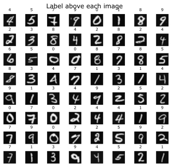
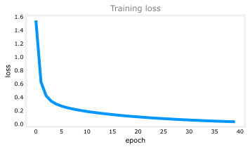

A softmax neural network trained on 5000 real handwritten digit images to recognize all ten digits, 0 through 9, with a prediction grid and a look at its mistakes.
Published
Jul 14, 2026
ImportantTwo changes from the original notebook
This page runs on TensorFlow 2.21 with Keras 3, where the assignment was written against Keras 2. Two things changed (updated 2026-08-31).
Keras 3 replaced Keras 2. TensorFlow 2.21 bundles Keras 3, so the training numbers differ from the notebook’s in the last decimals even where the model and data are unchanged. The notebook reports 15 misclassified images out of 5,000; this run reports 21, and the logits for the displayed example differ.
The grader is stripped, and the values its checks asserted are printed and explained instead.
The 5000-image ten-digit dataset, the architecture, the softmax from_logits formulation and the error analysis are the assignment’s own.
The earlier Handwritten Digit Recognition lab built a network to tell just two digits apart, zero and one. This lab extends that to the full problem: recognizing all ten digits, 0 through 9, using the softmax output layer and cross-entropy loss from the multiclass pages. The Sequential / Dense / compile / fit mechanics are the same as before, so this lab focuses on the new part: a real ten-class problem, with a look at the predictions and the mistakes.
Dataset
The dataset has 5000 handwritten digit images. Each image is 20 by 20 pixels, unrolled into a row of 400 numbers, so X has shape (5000, 400). The labels y hold the true digit (0 through 9) for each image. You can download the features here and the labels here.
Each row of X is one image. To view it, reshape those 400 numbers back into a 20 by 20 grid (and transpose it, since the pixels were unrolled column by column). Here are 64 random images with their true labels.
rng = np.random.default_rng(1)fig, axes = plt.subplots(8, 8, figsize=(5, 5))fig.tight_layout(pad=0.1, rect=[0, 0.03, 1, 0.93])for ax in axes.flat: i = rng.integers(X.shape[0]) ax.imshow(X[i].reshape(20, 20).T, cmap="gray") ax.set_title(int(y[i, 0]), fontsize=8) ax.set_axis_off()fig.suptitle("Label above each image", fontsize=13)plt.show()

Label above each image.
Model
The network has three layers: two hidden layers of 25 and 15 ReLU units, and an output layer of 10 units, one per digit. Following the numerically stable pattern, the output layer uses a linear activation and the softmax is folded into the loss with from_logits=True. The optimizer is Adam.
The summary() shows the layer sizes and the parameter counts. The first layer has \(400 \times 25 + 25 = 10025\) parameters (a weight per input-unit pair, plus one bias per unit), and the pattern continues through the network. Now train it. Each epoch is one pass over all 5000 images.
history = model.fit(X, y, epochs=40, verbose=0)fig, ax = plt.subplots(figsize=(5, 3))ax.plot(history.history["loss"], color="#0096ff")ax.set_xlabel("epoch"); ax.set_ylabel("loss")ax.set_title("Training loss", color="gray")fig.tight_layout()plt.show()

Training loss.
The loss falls steadily as the network learns to map images to digits.
Making a Prediction
To classify one image, call model.predict on it. Remember the output layer is linear, so the model returns 10 logits, not probabilities. Take image number 1015, which is a handwritten two.
raw logits: [[-8. 5.7 7.9 5.1 -6.3 -3.5 -2.2 6.8 -1.1 -6.7]]
largest at index: 2
The largest logit is at index 2, so the network predicts a 2. To turn the logits into probabilities, pass them through a softmax; to get just the predicted digit, np.argmax is enough.
Sample handwritten digits labeled with their predicted classes.
Looking at the Errors
Running the model on all 5000 images and comparing predictions to the true labels shows how many it gets wrong. On this dataset a well-trained network makes only a handful of mistakes.
The misclassified digits are usually the genuinely ambiguous ones, sloppy or unusual handwriting that even a person might hesitate over. Here are a few, labeled true, predicted.
Training for more epochs can drive these last errors down further. With that, you have trained a real ten-class image classifier using a softmax output layer.
Review Questions
1. The output layer has 10 units with a linear activation, not softmax. Why, and how do you turn its outputs into probabilities?
TipAnswer
A linear output plus SparseCategoricalCrossentropy(from_logits=True) is the numerically stable form. The network emits raw logits and the softmax is folded into the loss. To get probabilities from a prediction, apply a softmax afterward with tf.nn.softmax. For just the predicted digit, np.argmax on the logits is enough.
1. The first layer reports 10025 parameters. Where does that number come from?
TipAnswer
The input has 400 values and the layer has 25 units, giving \(400 \times 25 = 10000\) weights, plus one bias per unit, \(25\) more, for \(10025\) total.
1. Why does the model still make a few errors, and what kind of images are they usually?
TipAnswer
No model is perfect, and the misclassified images are typically the genuinely ambiguous ones, messy or unusual handwriting. Training for more epochs can reduce these remaining errors further.